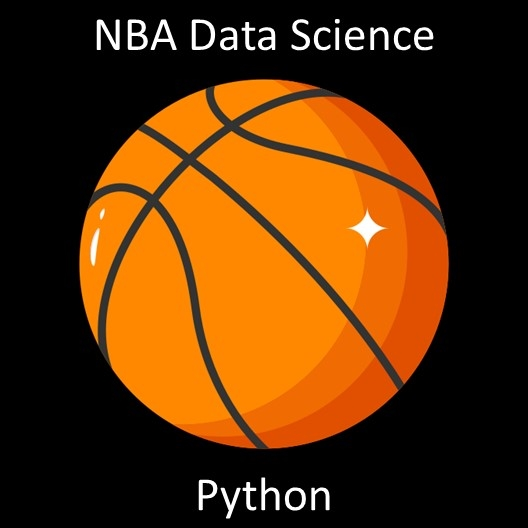
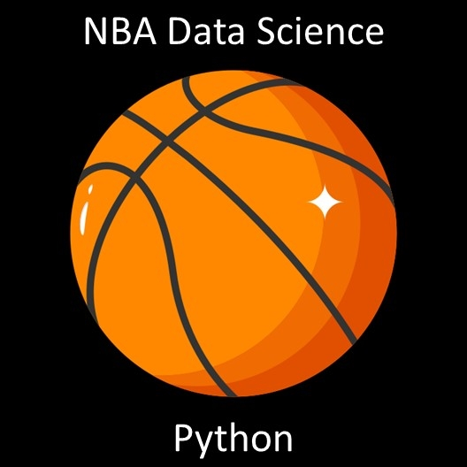
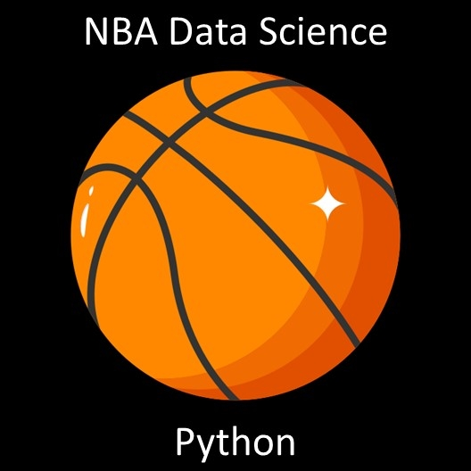

Below are a handful of the many
projects/programs I have created while pursuing my degree at
Boston University. They incorporate a variety of skills and
languages, with each having a brief description, detailing the
nature of the program. The source code is also made easily
available for you to download. Thank you and I hope you enjoy
my work.

Click on the project's icon to see more details.
Department Manager Project
This project focuses on the use of
various design patterns within Java. This includes the use of
two creational, two structural, and two behavioral design
patterns. The program itself simulates the management of a
department within an educational setting. Within the project,
documentation is provided to describe each pattern, why it is
used, the important code in its implementation, and allow for
visualization of its structure.
This project is focused on
information systems analysis and design. It includes four parts
and is based off of a fictious application called the
BestPurchase Application.
Part 1
Focuses on defining the scope and mission statement, as well as
the creation of user stories and use cases. Functional and
non-functional requirements are determined, and the State
Transition, Sub-States, and Graphical User Interface designs
are created.
Part 2
Focuses on designing with the Unified Modeling Language (UML).
A use case is selected and revised. A Sequence and Class Model
diagram are created. Three business classes are selected,
as well as one non-business class. These classes are described
in relation to the design and their relationship to other
classes.
Part 3
Focuses on the design goals and data flows. The Class Model
diagram is revised to include packages. The packages are
described with their name, design goals, and design tradeoffs.
The Logical Data Flow and Physical Data Flow diagrams are
created and described.
Part 4
Focuses on specifying design details. An updated Class Model
diagram is presented. A method from the Class Model diagram is
selected and an Activity diagram pertaining to this method is
displayed. A Focused Sequence diagram is created based on an
activity from the Activity diagram. Lastly, pseudocode is
created for the selected method.
This project uses data analysis
and machine learning to
analyze player statistics in the National Basketball
Association (NBA) and predict player total points scored.
The program takes CSV files of player statistics over a ten
season timeframe and analyzes and charts player statistics,
as well as predicts total points scored. The project
utilizes Numpy, Matplotlib, Seaborn, Scikit-learn, Pandas,
Linear and Quadratic Regressions, Decision Trees, and
Random Forests within Python.
This project reads two separate
JSON/CSV files and merges
them into a new file if a search is performed. It takes
user input as search criteria, searching the merged file
for the search word, and finding the data sets containing
the search word. The program requires user input. Based off
of this input it will behave accordingly. If the user does
not conduct a search it will display a statement and the
total searches. If the user does perform a search, it will
display the total searches, the amount of times each word
was searched, the search word, the total data sets
containing that word, the time and date of the search, and
the duration of each specific search. The program is built
with Java and can/utilizes JSON/CSV files.
This project focuses on creating
a process scheduler for
various processes that vary in duration and priority. The
program itself utilizes various data structures in Java to
manage processes as they come into the program. It takes
processes from a text file and outputs the process summary
information as a new separate text file.
This project is an interactive
financial portfolio builder
based on user input from the DOW 30 equity index
components. The program allows users to create a
hypothetical DOW 30 equity portfolio. It utilizes a step by
step format to guide users through its creation. Depending
on the user input, the portfolio builder will give users a
summary of their hypothetical portfolio, which can include
the tickers and shares they bought, the cost for each
position, the total cost of their equities, their equity vs
cash asset allocation, their equity portfolio's weighted
average beta, weighted average p/e ratio, annual forward
dividend, annual forward dividend yield, and a sector
weighted breakdown of their equity positions. It also
includes a summary of their individual equity positions.
The program is built with Python and utilizes text
files.

 
